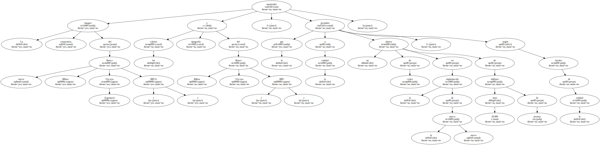
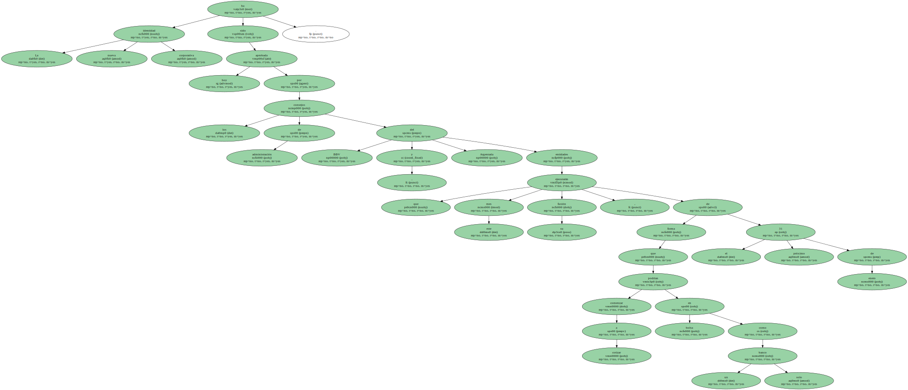
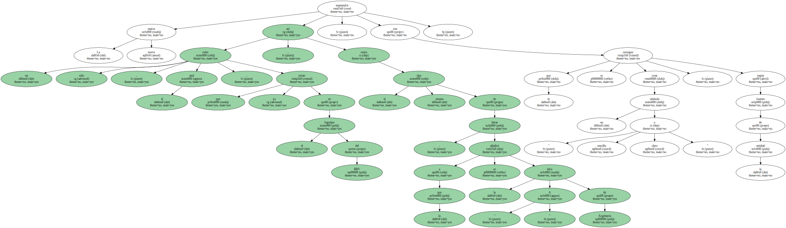
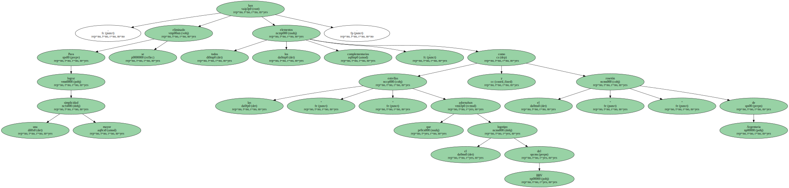
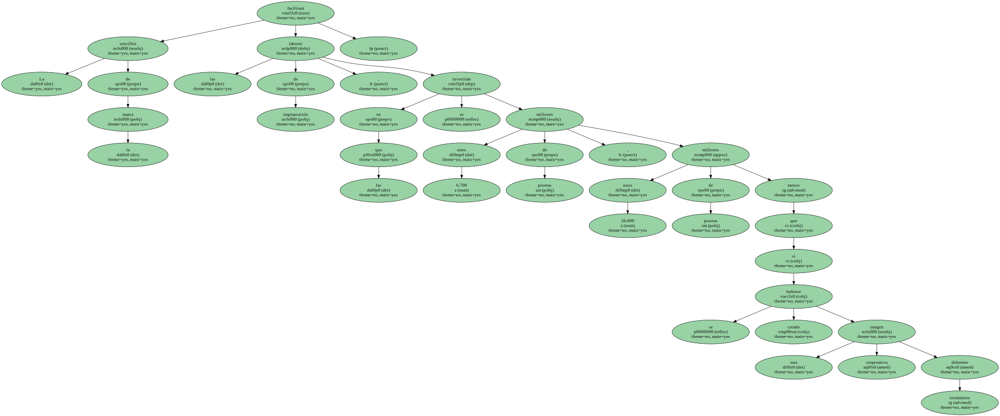
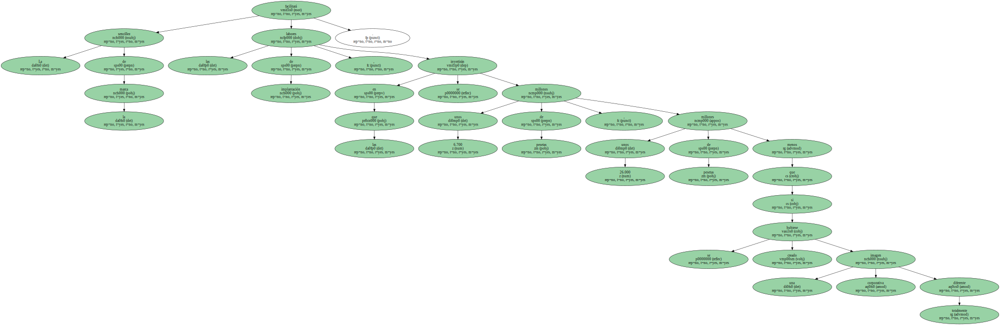

La imagen corporativa del nuevo Banco Bilbao Vizcaya Argentaria ( BBVA ) mantendrá los colores y tipografía del Banco Bilbao Vizcaya ( BBV ) , lo que permitirá a la entidad un ahorro de costes en la implantación de la nueva marca de unos 26.000 millones de pesetas , según fuentes de la entidad.
La nueva identidad corporativa ha sido aprobada hoy por los consejos de administración del BBV y Argentaria , entidades que este mes ejecutarán su fusión , de forma que podrían comenzar a cotizar en bolsa como un solo banco el próximo 31 de enero.
La nueva identidad corporativa ha sido aprobada hoy por los consejos de administración del BBV y Argentaria , entidades que este mes ejecutarán su fusión , de forma que podrían comenzar a cotizar en bolsa como un solo banco el próximo 31 de enero.
La nueva marca mantendrá un sólo color , el azul , que ya existe en el logotipo del BBV , así como el mismo tipo de letras , a la que se añadirá la letra " A " de Argentaria , con lo que se consigue crear un símbolo " sencillo y claro " , según fuentes de la entidad.
Para lograr una mayor simplicidad , se han eliminado todos los elementos complementarios , como las " estrellas " que adornaban el logotipo del BBV y el " rosetón " de Argentaria.

Al respetar el aspecto global de la marca del BBV se consigue mantener el valor de la marca del BBV en Latinoamérica y en España , donde tiene " el nivel de notoriedad más alto " entre los bancos del país.
La sencillez de la marca facilitará las labores de implantación , en las que se invertirán unos 6.700 millones de pesetas , unos 26.000 millones de pesetas menos que si se hubiese creado una imagen corporativa totalmente diferente.
